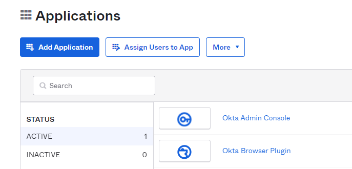
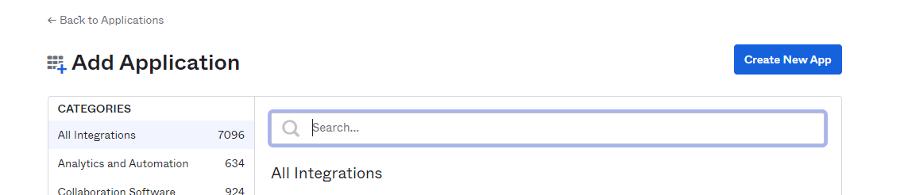
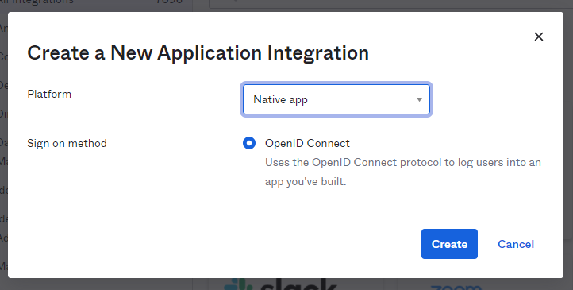
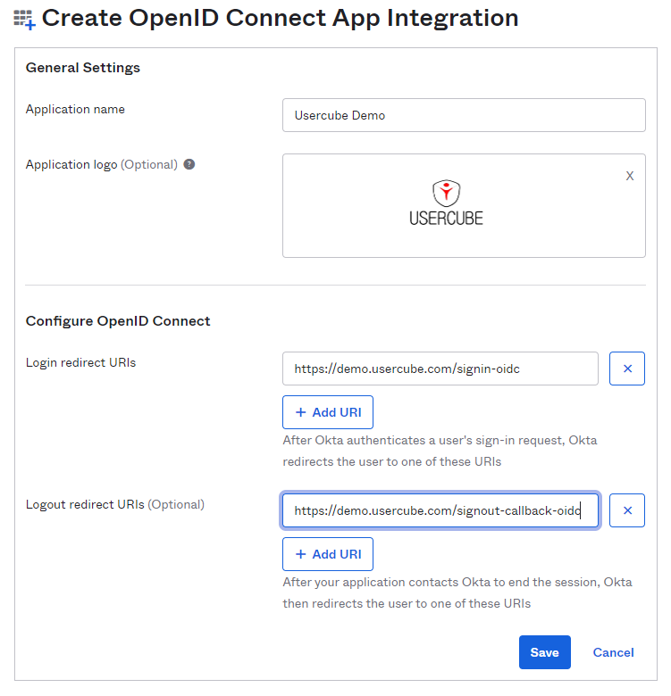
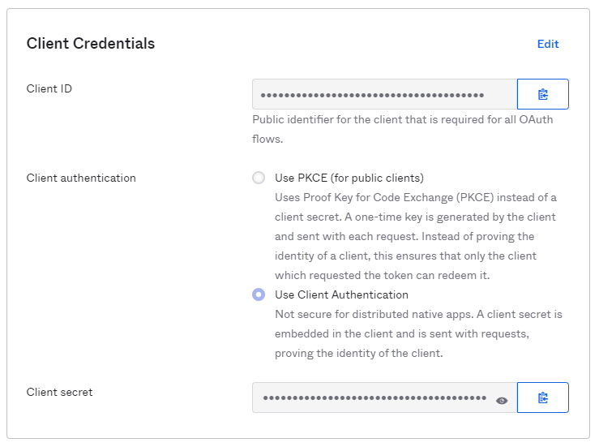
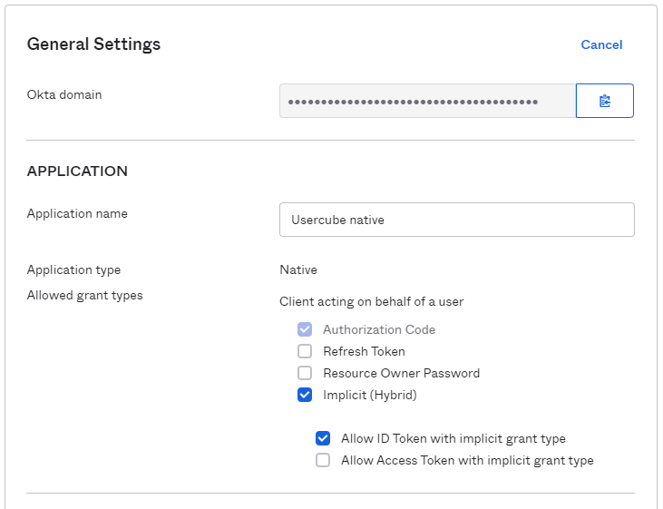

Configure Okta
This guide shows how to configure the OIDC to set up the authentication to Identity Manager.
Create the Application
On the Okta dashboard:

Step 1 – Select the Applications section and click on the Add Application button.

Step 2 – Then click on the Create New App button.

Step 3 – Select the platform Native app. The only sign-on method is the OpenID Connect. Click on Create.
Step 4 – In General Settings, name your Application. You can also add a logo.
Step 5 – In the Configure OpenID Connect section, enter the connection redirection URL in the part: Login redirect URLs. To find out this URL, just take the URL of the Identity Manager application and add /signin-oidc.
The Identity Manager disconnection redirection URL is also necessary. To construct it, take Identity Manager's URL again and, at the end, add /signout-callback-oidc.
NOTE: The Logout redirect URLs section is marked as optional but it is mandatory for Identity Manager.

Configure the Client Credentials
The client secret in Identity Manager is required for the OIDC connection. You must therefore configure this OIDC connection option in the application. In the Application Dashboard, click on Edit in the Client Credentials section. Select the option Use Client Authentication and save the changes.

Configure the Application Settings
In the Application section, check the box Implicit (Hybrid) so that the connection with Identity Manager can operate correctly. Allow ID Token with implicit grant type is optional.

Configure the appsettings.json
To successfully configure the OpenId protocol, you can refer to the dedicated section in the detailed guide. See the End-User Authentication for additional information.
Below is an illustrative example of how to set up your `appsettings.json` file.
Code attributes enclosed with <> need to be replaced with a custom value before entering the script in the command line.
appsettings.json
{
...
"OpenId": {
"Enabled": true,
"Okta": {
"AuthenticationScheme": "Okta Authentication",
"Authority": "https://your-domain.okta.com/oauth2/default",
"ClientId": "Your Client ID",
"ClientSecret": "Your Client Secret",
"DisplayName": "Okta Display Name",
"NameClaimType": "https://schemas.xmlsoap.org/ws/2005/05/identity/claims/upn",
"SaveToken": true
}
}
}